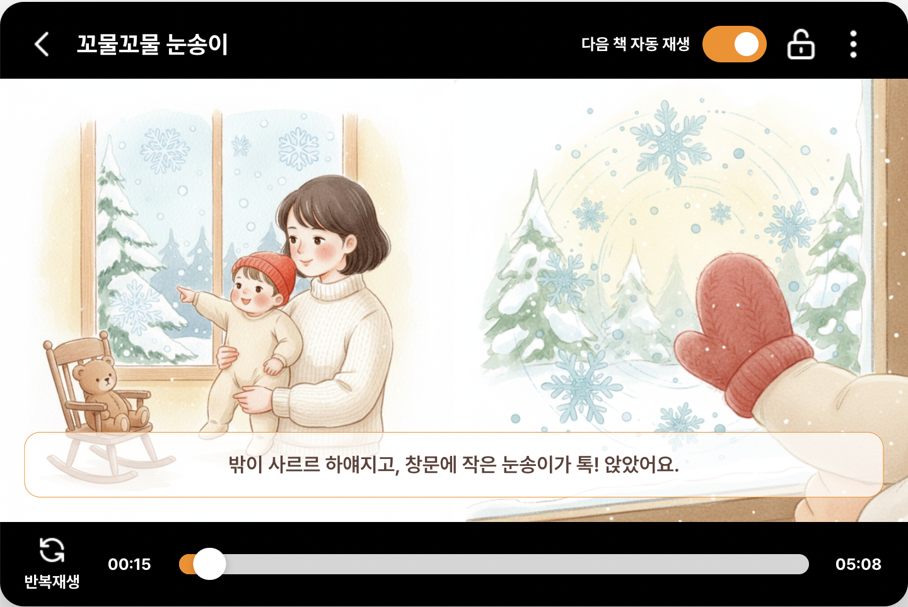
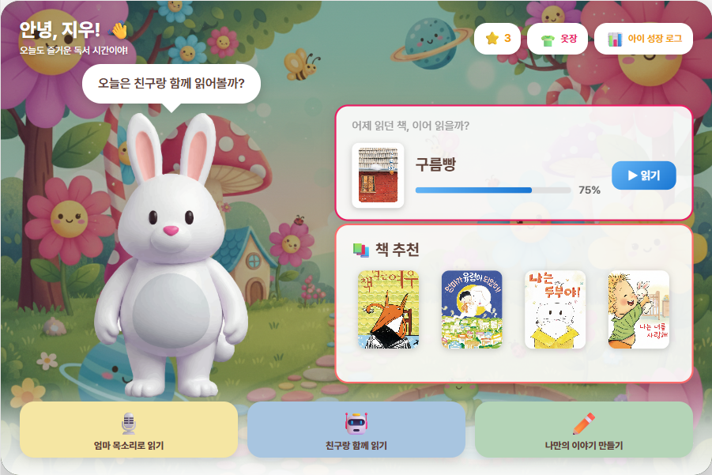
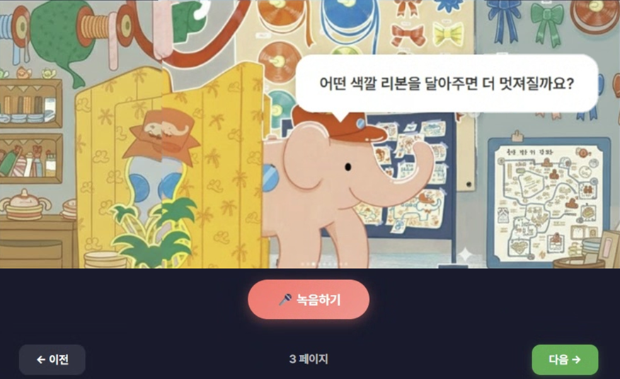
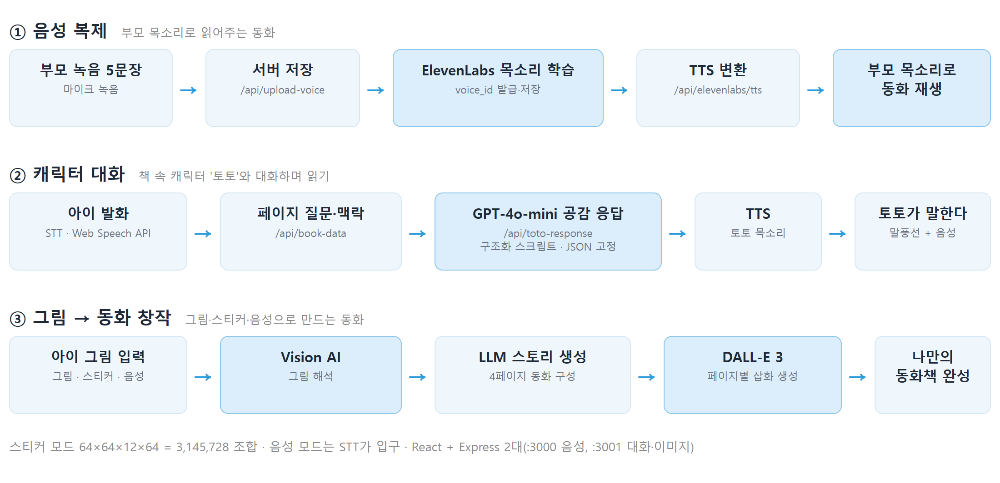
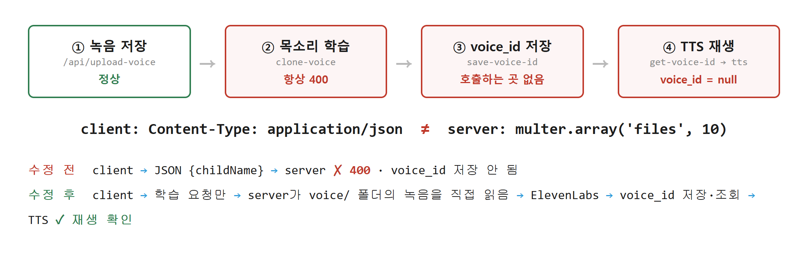
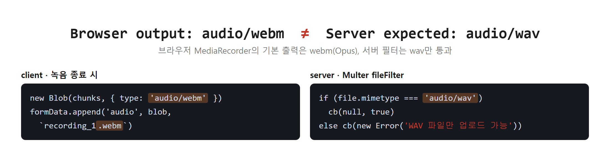
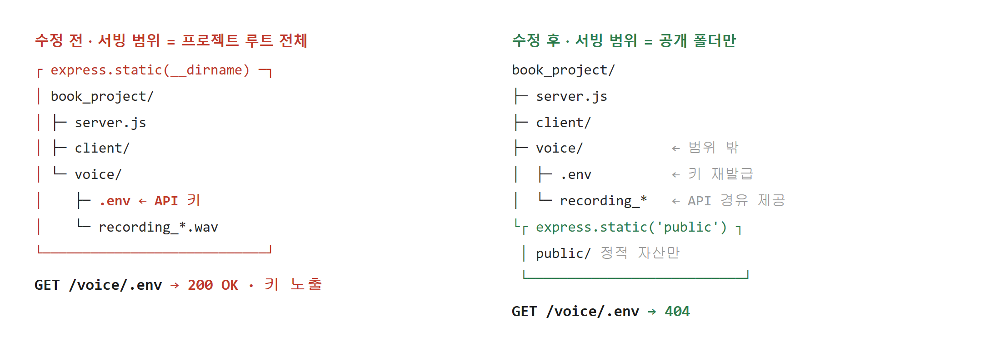
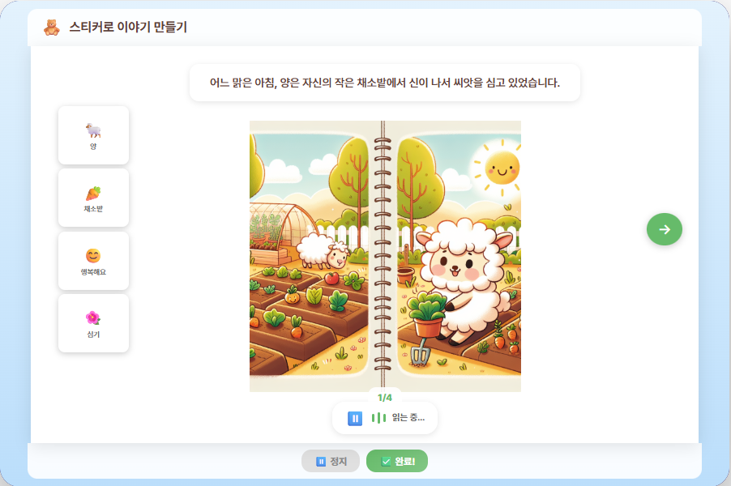

부모 목소리로 읽어주고, 아이와 대화하고, 아이 그림으로 동화를 만드는 AI 인터랙티브 독서 앱.
기획부터 Android 태블릿 실기기 검증까지 완주한 3인 팀 프로젝트 · 담당: AI 파이프라인 설계 · 백엔드 · 프론트엔드 구현
01문제 정의
부모님이 책을 읽어주는 시간은 1회 5~10분, 유아의 스마트기기 노출은 하루 3시간. 아이는 수동적 미디어에 홀로 남고, 기존 AI 독서 서비스는 분석·추천 중심이라 읽는 시간 자체는 여전히 아이 혼자의 몫. 1~6세는 글을 쓸 수 없어 자기 이야기를 만들 방법도 없음.
| 58.5% | 18세 미만 자녀 가구 중 맞벌이 | 통계청, 2024 하반기 지역별고용조사 |
| 하루 3시간 | 만 3~4세 유아의 일평균 스마트기기 노출 | 학습자중심교과교육연구, 2022 |
| 1회 5~10분 | 부모님이 책을 읽어주는 평균 시간 | KISDI, 2023 어린이 미디어 이용 조사 |
"전자책도 결국 스크린타임 아닌가?"
WHO·AAP 가이드라인과 29개 연구 메타분석에서 도출한 설계 기준선: 부모가 개입하고 자극을 절제한 인터랙티브 독서는 종이책과 동등하거나 더 높은 발달 효과. 이후 모든 기능 판단의 근거.
02서비스 설계
| 검토안 | 내용 | 판단 |
|---|---|---|
| 1안. 콘텐츠 라이브러리·추천 강화 | 기존 방식의 연장 | 기각. 소비량만 늘 뿐, 수동적 시청이라는 본질은 그대로 |
| 2안. LLM 캐릭터와 완전 자유 대화 | 몰입감 최대 | 기각. 유아 상대 환각·부적절 발화 통제 불가 |
| 3안. 통제된 하이브리드 (채택) | 부모님 목소리 복제 + 구조화 스크립트에 LLM 공감 응답만 | 채택. 스크린타임 반론을 문헌으로 방어, 아동 안전을 스크립트 수준에서 통제, 2개월 내 구현 가능 |
03프로토타입
목업이 아닌 React 구현 화면.




04AI 파이프라인

05프롬프트 설계
발달 연구의 원칙(평가 없는 상호작용, 자극 절제)을 시스템 프롬프트 규칙으로 번역. 원칙이 문서가 아니라 코드에서 동작.
const systemPrompt = `너는 유아 인터랙티브 독서 앱의 캐릭터 '토토'야.
교사나 설명자가 아니라 아이와 같은 위치에서 느끼고 고민하는 친구야.
규칙:
- 정답을 평가하거나 가르치지 않는다 ← ① 평가 금지
- 각 문장은 20~30자 이내 ← ② 길이 제약
- 아이 말이 없거나 "몰라/음"이면 → 공감 + 두 가지 선택지 제시 ← ③ 무응답 폴백
출력 형식(JSON):
{ "response1": "공감 문장", "response2": "상상 확장 문장" } ← ④ 출력 구조 고정`;
await openai.chat.completions.create({
model: 'gpt-4o-mini', // ← ⑤ 유아의 대기 한계에 맞춘 속도 우선
temperature: 0.8, max_tokens: 150,
response_format: { type: 'json_object' }
});1. 평가 금지 · 답을 채점하는 순간 대화가 끝난다고 보고 평가 어휘 자체를 차단
2. 문장 20~30자 · 유아가 끝까지 들을 수 있는 길이, TTS 재생 시간까지 통제
3. 무응답 폴백 · 침묵과 "몰라"도 실패가 되지 않는 대체 흐름
4. JSON 출력 고정 · 말풍선 UI와 TTS가 항상 같은 형태로 동작
5. gpt-4o-mini + max_tokens 150 · 응답 지연과 비용을 함께 관리
06트러블 슈팅
바이브코딩으로 빠르게 만들되 생성된 코드를 신뢰하지 않고, 기능 단위 E2E로 단계별 입·출력을 직접 추적. 그렇게 발견하고 해결한 결함 3건.
오류 1 · voice_id 파이프라인 단절

원인: 같은 API를 두고 클라이언트는 JSON, 서버는 multipart를 가정. voice_id는 어디에도 저장되지 않음. 수정: 서버가 voice 폴더의 녹음을 직접 읽어 ElevenLabs로 전달하도록 재설계, voice_id 저장·조회 연결 복구 후 재생 확인.
오류 2 · 파일 포맷 계약 불일치 (webm ≠ wav)

수정: 서버 필터를 webm 허용으로 정합화, 저장 확장자를 실제 포맷과 일치. 업로드 성공 확인.
오류 3 · 환경변수(API 키) 노출

조치: 서빙 범위를 public 폴더로 제한 · 노출 키 재발급 · .gitignore 추가.
07결과
